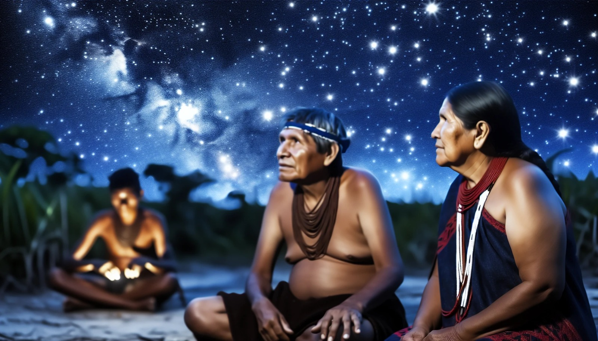

Frequentemente, a percepção inicial sobre a cultura indígena nos leva a imaginar um povo preso a estereótipos, retratado como primitivo e distante da complexidade da vida moderna. No entanto, ao aprofundarmos nossos estudos, especialmente nas aulas de bases epistemológicas das ciências modernas, revela-se uma riqueza de sabedoria e conhecimento que vai além das narrativas limitadas dos livros escolares.
Os povos indígenas do Brasil carregam consigo uma herança cultural que transcende a visão estereotipada, revelando sistemas de conhecimento complexos, uma relação profunda com a natureza e uma vasta compreensão dos aspectos que formam o universo.
Além disso, explorar essa riqueza não apenas desafia preconceitos enraizados, mas nos oferece uma oportunidade única de aprender com uma tradição que, muitas vezes, é subestimada. Sendo assim, esse trabalho nos ajudou a reconhecer e valorizar as contribuições significativas dessas comunidades para nosso entendimento do mundo, expandindo assim nossa visão sobre a complexidade e a diversidade da existência humana.
Contudo, estudar a fundo a cultura indígena não é apenas uma busca por conhecimento, mas uma chance de quebrar barreiras, cultivar respeito e enriquecer e aprender um pouco mais sobre nossa cultura.
Contexto da Astronomia Indígena no Brasil
A riqueza cultural do Brasil é profundamente influenciada pelos saberes indígenas que consideram a astronomia como um elemento vital de suas cosmovisões. Antes da chegada dos colonizadores europeus, esses povos já mantinham uma relação intrínseca com o cosmos, onde a observação dos astros estava entrelaçada com seus rituais, tradições e entendimento do mundo.
Com a colonização, houve impactos significativos na cultura indígena, incluindo suas práticas astronômicas. No entanto, muitas comunidades foram capazes de preservar parte desses conhecimentos, adaptando-os à nova realidade e preservando sua identidade cultural ao longo do tempo.
Atualmente, a Astronomia Indígena desperta um interesse renovado, não apenas como um patrimônio cultural, mas como uma fonte de sabedoria que transcende os limites entre ciência, cultura e espiritualidade. Reconhecer e valorizar esses saberes ancestrais não apenas enriquece nossa compreensão do universo, mas também oferece uma oportunidade única de diálogo intercultural, promovendo a diversidade de perspectivas e enriquecendo a sociedade contemporânea com uma visão mais holística e integrada do mundo.
Vamos explorar a cosmovisão dos povos indígenas do Brasil em relação ao universo, onde cada estrela e fenômeno celeste carregam significados culturais e mitológicos transmitidos através de geração em geração. Essa visão vai além da observação científica, refletindo uma compreensão profunda e enraizada ao longo das gerações. Além disso, a relação entre a astronomia indígena e a natureza é evidente na agricultura e nas práticas cerimoniais, revelando a conexão essencial entre o homem e seu ambiente. Estamos prestes a desbravar essas riquezas celestiais e tradições antigas.
Conhecimento Profundo do Universo
A cosmovisão dos povos indígenas do Brasil é um exemplo notável de como a relação entre o homem e o universo vai além da mera observação física. Eles percebem o cosmos como parte intrínseca de sua identidade, história e espiritualidade. Cada estrela, constelação ou fenômeno celeste carrega um significado cultural e mitológico que se entrelaça com as narrativas ancestrais, transmitindo valores éticos e orientações espirituais para suas comunidades. A noção de conexão com os astros vai além do entendimento científico, sendo um reflexo das raízes mais profundas de suas tradições e da sabedoria acumulada ao longo de gerações.
"Se as pessoas não tiverem vínculos profundos com sua memória ancestral, com as referências que dão sustentação a uma identidade, vão ficar loucas neste mundo maluco que compartilhamos."
Ailton Krenak - Ambientalista e Filósofo Indígena
Integração entre Astronomia e Natureza
A ligação entre a astronomia indígena e a natureza vai muito além da observação dos ciclos celestes. Esses povos possuem um conhecimento intrincado sobre a relação entre os movimentos estelares e os ciclos naturais da terra. Esse conhecimento é crucial na agricultura, permitindo o reconhecimento de períodos ideais para plantio, colheita e outros processos agrícolas. Além disso, as práticas cerimoniais são delineadas pela harmonia entre os eventos celestes e terrestres, demonstrando a profunda conexão entre os ritmos cósmicos e os ciclos de vida locais.
Utilização da Astronomia na Orientação Espacial
A habilidade dos povos indígenas de utilizar as estrelas para a navegação transcende meramente a orientação geográfica. Eles têm um conhecimento minucioso dos movimentos celestes, o que permite uma navegação precisa por vastas áreas territoriais. Mais do que simplesmente encontrar direções, essa capacidade está profundamente enraizada na compreensão da interconexão entre as estrelas, as estações do ano e as características geográficas locais. É um testemunho da profunda relação simbiótica que esses povos têm com o cosmos e a Terra.
Integração dos Saberes Celestiais
A Astronomia Indígena não é apenas um conhecimento técnico sobre os astros, mas está intrinsecamente conectada à ética, espiritualidade e sustentabilidade. Esses povos possuem uma visão holística que não separa a observação dos astros das responsabilidades éticas e sociais. O conhecimento é transmitido não apenas como um meio de entender o universo, mas como um guia para viver em equilíbrio e harmonia com o ambiente e com os outros seres. Essa abordagem reflete a profunda compreensão da interconexão entre todos os elementos do cosmos e serve como uma base para um estilo de vida fundamentado no respeito mútuo e na preservação da natureza.
Conclusão
A Astronomia Indígena no Brasil não se restringe à simples observação dos corpos celestes; é um sistema de conhecimento profundamente conectado à identidade, à cultura e à visão de mundo das comunidades nativas. Esses saberes ancestrais representam uma relação simbiótica entre os povos indígenas e o cosmos, revelando uma cosmovisão onde céu e Terra são partes integrantes de um todo interdependente. Essa sabedoria transcende as técnicas astronômicas, incorporando valores éticos, responsabilidade ambiental e conexões espirituais, influenciando não apenas atividades práticas como agricultura e navegação, mas também rituais, organização social e transmissão de tradições.
A preservação e valorização desses conhecimentos não se restringem ao status de patrimônio estático, mas exigem o reconhecimento dinâmico de sua relevância para a sociedade contemporânea. Integrar os saberes indígenas à ciência moderna abre caminho para uma visão mais inclusiva do universo, onde diferentes formas de conhecimento se complementam. A valorização da Astronomia Indígena oferece lições valiosas sobre respeito à natureza, sustentabilidade e diversidade cultural, convidando a humanidade a buscar equilíbrio entre progresso científico e respeito às perspectivas culturais diversas. Reconhecer e honrar esses conhecimentos constrói pontes entre diferentes mundos de sabedoria, fortalecendo não apenas nossa compreensão do universo, mas também os laços sociais que unem toda a humanidade em sua busca pela harmonia dentro do vasto cosmos.